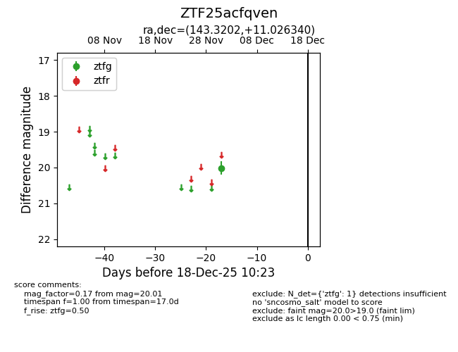
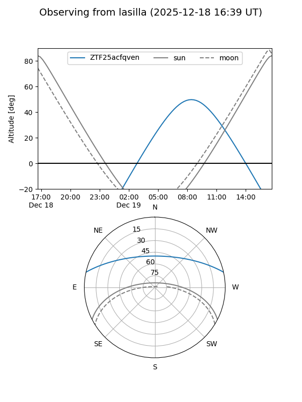
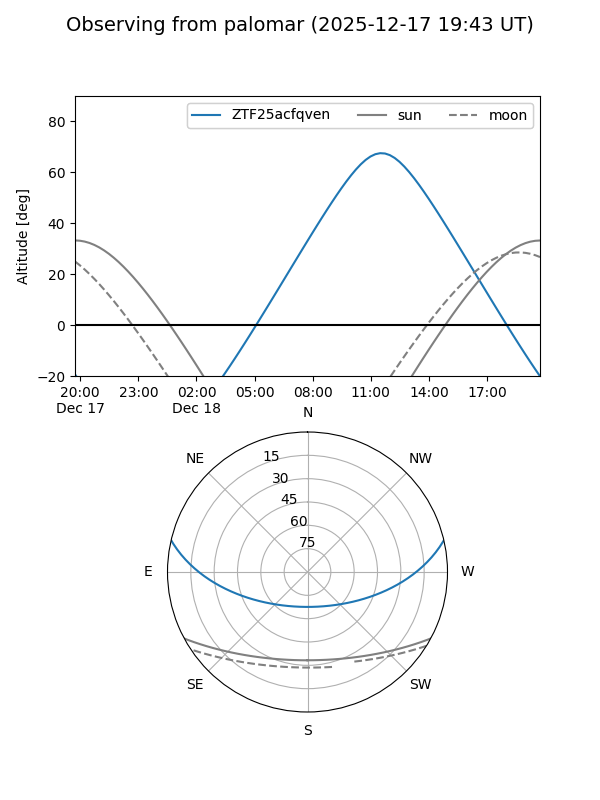

ZTF25acfqven
Target ZTF25acfqven at 2025-12-18 11:17
Aliases and brokers:
FINK: fink-portal.org/ZTF25acfqven
Lasair: lasair-ztf.lsst.ac.uk/objects/ZTF25acfqven
ALeRCE: alerce.online/object/ZTF25acfqven
alt names
ZTF25acfqven (ztf,fink_ztf)
Coordinates:
equatorial (ra, dec) = 143.3202,+11.02634
equatorial (HMS+DMS) = 09:33:16.85,+11:01:34.82
galactic (l, b) = (222.0768,+40.85045)
Photometry
last ztfg=20.01
1 ztfg detections
Lightcurve

Visibility


Additional plots